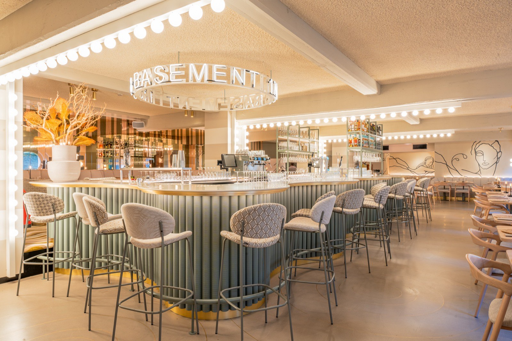

The night your bar fills itself
Guests book a curated three-bar cocktail walk and arrive at your door already booked and paid. No commission, no onboarding fee.
Book a 15-minute intro call →One evening, three of the city's best bars
- Three hand-picked bars in one evening, one signature cocktail at each
- Guests book online and pay in full before they set off
- Tables are arranged in advance, so nobody walks in unannounced
- Self-guided at their own pace, with a designed route map on their phone
- Premium locals aged 22 to 60+: girls' nights, birthdays, dates, friends catching up
Walking since 2023 in Amsterdam, Rotterdam, Utrecht, Groningen and Delft, with London launching. See how a walk works →
New guests, on the nights you want them
No commission and no onboarding fee. We bring the guests, you turn them into regulars.
Guests on your quieter hours
Guests book within your own opening hours. No fixed slots to keep free, no evening blocked off.
Paid before they arrive
The walk is paid online in advance. Everything they order on top of it is your revenue, at your full margin.
70% order a second round
Seven in ten guests order another drink or something to eat once they are inside and comfortable.
80% come back on their own
A first visit turns into a regular. You meet a fresh local audience every single week.
Marketing, handled by us
Your bar on our website, socials and paid ads. We arrange influencer visits and professional photoshoots, and those photos are yours to use.
Brands that pour with us
We work with Bacardi, Pernod Ricard, Lucas Bols and Diageo, and partner bars get first call on what we do together.
Four steps, zero extra work
A guest books online
They choose a date and a start time on our site and pay for the whole walk up front.
The booking lands in your inbox
One email, ahead of time, with the date, the party size, the guest's name and contact details and the time to expect them. No app, no dashboard, no tablet on the bar.
They walk in and give their name
Guests say they booked with WOGO, give their name, and pick one drink from the small signature menu you chose.
Most stay for more
The signature cocktail is where the evening starts, not where it ends. What they order next is yours.
Soon there is even less to do
Email works today and will keep working. These two are being built now, and partner bars get them first.
Your partner dashboard
- Every WOGO group heading your way, per day and per week
- Your own numbers per month: guests delivered and busiest nights
- Update your signature menu and contact details yourself
A direct line to the booking system
- Reservations drop straight into your own reservation system
- Changes and cancellations update themselves
- Nothing to re-type and nothing to miss
Nothing for you to install, and nothing changes at your bar until it is ready.
A fair, simple deal
What we ask
- A small signature menu: two cocktails and one alcohol-free drink, chosen by you. We design it in the WOGO style.
- Table space for the group. Guests book within your own opening hours, so there are no slots to keep free.
- A short briefing for your team. We write the one-page staff sheet, you put it behind the bar.
What you get
- A guaranteed fee for every guest who walks in, covering your cocktail cost. The same arrangement as every partner bar.
- No commission and no onboarding fee, now or later.
- A permanent place on the route, built so no two bars on it compete.
- Your bar promoted through our website, socials and paid ads.
Pricing is simple and we go through every line of it in the intro call, so you know exactly what you are signing.
Questions bars ask us
Do we have to keep time slots free?
What does it cost to join?
How many guests can we expect?
Do we end up competing with the other bars on the route?
What do we have to serve?
Are we tied into a contract?
Our routes today
Five Dutch cities on the map today, with London next. Your city may already be one of them.
There is room on the route
The next bar on the route could be yours.
Book a 15-minute intro call →Rather write first? Email info@wogoamsterdam.com and we reply within one working day.